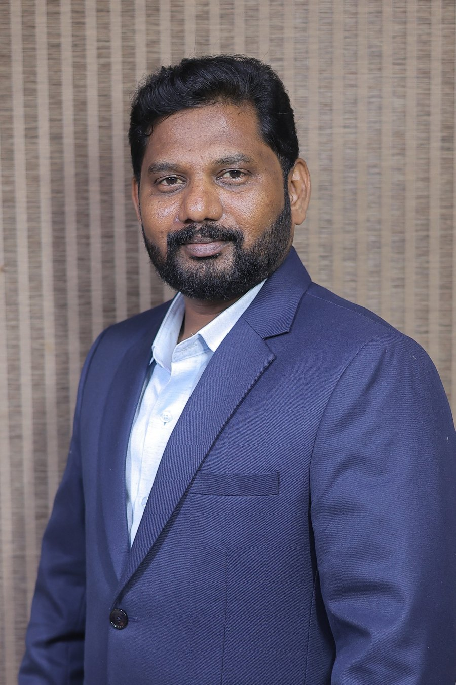

Project management
Project planning, scope and timeline management, delivery coordination, risk tracking and execution governance.
Project & Program Management | Strategic Account Management
I bring together project and program delivery, client and stakeholder engagement, cross-functional leadership and business transformation. My focus is aligning people, priorities and execution to deliver dependable outcomes, strengthen client partnerships and create lasting business value.

PROJECT · PROGRAM · CLIENT LEADERSHIP01 / ABOUT
I am a project and program management professional with experience in complex content operations and publishing technology environments.
My professional focus is bringing structure to complex initiatives: defining outcomes, coordinating cross-functional teams, managing dependencies and risks, engaging stakeholders, resolving escalations and maintaining delivery discipline.
I believe successful management is measured not only by activities completed, but by client confidence, business outcomes, predictable execution and the capability built within teams.
02 / CORE EXPERTISE
A leadership portfolio built around delivery ownership, client relationships, business outcomes and transformation.
Project planning, scope and timeline management, delivery coordination, risk tracking and execution governance.
Coordinating interconnected workstreams, priorities, dependencies, governance and performance across programs.
Building trusted client relationships, aligning expectations, managing escalations and maintaining service commitments.
Driving operational change, process redesign, technology-enabled improvements and continuous performance enhancement.
03 / EXPERIENCE
I combine hands-on operational understanding with structured coordination, stakeholder alignment and a focus on delivery commitments.
FEBRUARY 2025 — PRESENT*
Lumina Datamatics · Scholarly publishing / content operations
Working within a complex, client-driven publishing technology environment, coordinating operational priorities and quality-led improvement initiatives across production, quality and technology stakeholders.
*Start date and role details are based on information currently available. Please verify before publishing.
04 / SELECTED WORK
Illustrative initiatives demonstrating delivery coordination, stakeholder alignment and transformation in a publishing operations environment.
Establishing structured KPI reviews, operational reporting and performance discussions to make priorities visible and support timely management decisions.
Coordinating production, quality and technology stakeholders to investigate recurring issues, agree actions, track dependencies and drive resolution.
Working across operational stakeholders in a client-focused delivery environment, translating feedback and expectations into clear actions and improvement priorities.
Contributing to workflow redesign, validation improvements, issue-tracking practices and technology enhancements that strengthen service delivery.
05 / LEADERSHIP APPROACH
06 / CONNECT
Open to conversations about project and program leadership, strategic account management, business transformation and complex service delivery.
PROFESSIONAL NETWORK
Project & Program Management · Strategic Account Leadership
Connect on LinkedInFor direct contact, please use the LinkedIn profile.